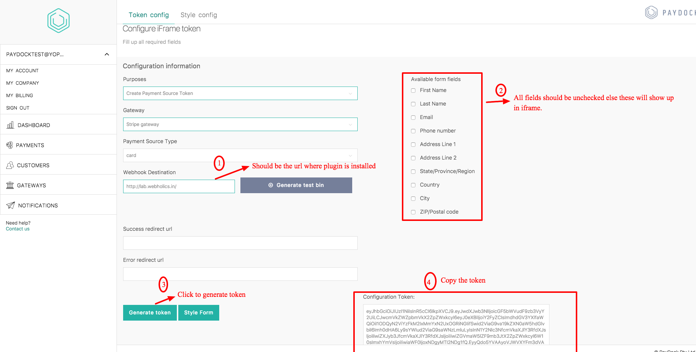

PayDock GF Addon
- Version: 1.0.0
Adds PayDock iFrame integartion to Gravity forms.
How to Use
Integrating PayDock is a 2 step process.
Creating Customer Object
Processing Charge on created customer
STEP 1: CREATING CUSTOMER OBJECT
Install the plugin. Then go to Forms => Settings, add your API keys & save.
Create a New Form New Form, add First Name (optional), Email, Phone(optional) fields to form. Then add Paydock credit card field.
Go to your Paydock account & create a new iFrame token
WEBHOOK DESTINATION SHOULD BE THE SITE URL WHERE PLUGIN IS INSTALLED
Paste & Save the token in Credit Crad Field
GO to Form Settings and edit the confirmation message. as shown below
You have to create a Charge page fist from Pages => Add new
Now under Form Settings Click PayDock Create Customer. as shown below
You have to create a Charge page fist from Pages => Add new
Map the fields you want to send to Paydock for creating customer object

LAST Step Add the Form to a Page in your site
STEP 2: Charging Customer
Create a New Form for charging Customer
It should have total or product field to send amount to paydock
Click on Form Settings => Paydock Charge=> Add New
Select One time or Recurring Subscription